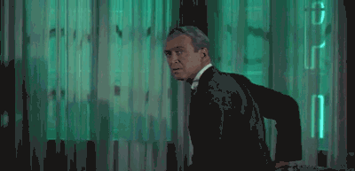

Test Project
Experimental Studio · 2026
A deliberately full project page used to test every part of the portfolio system in one place.
This is placeholder copy for a full-page test. It lets us judge the spacing, hierarchy and rhythm of a project without waiting for a real brief.
Every module is intentionally populated: a moving hero, music, video, a gallery and external links.
The long way around
A full-width Story Module for longer thoughts, process notes or a moment that needs room to breathe. It sits between the media and gallery modules without breaking the page rhythm.